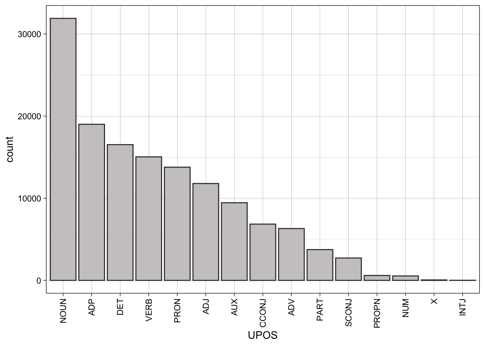
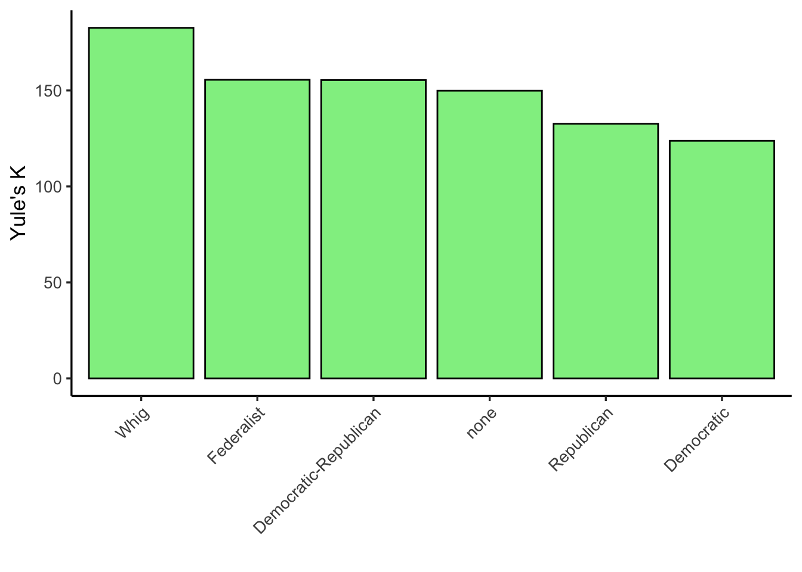
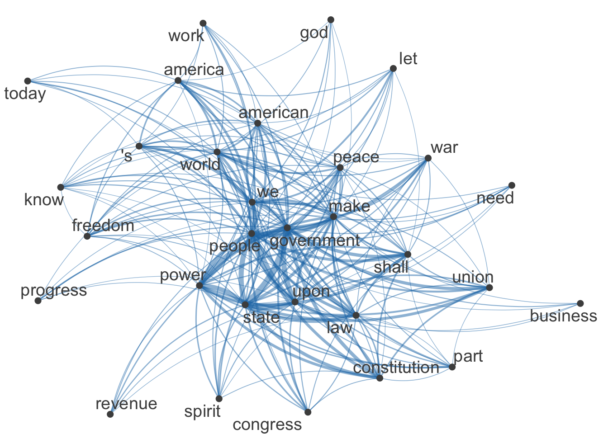
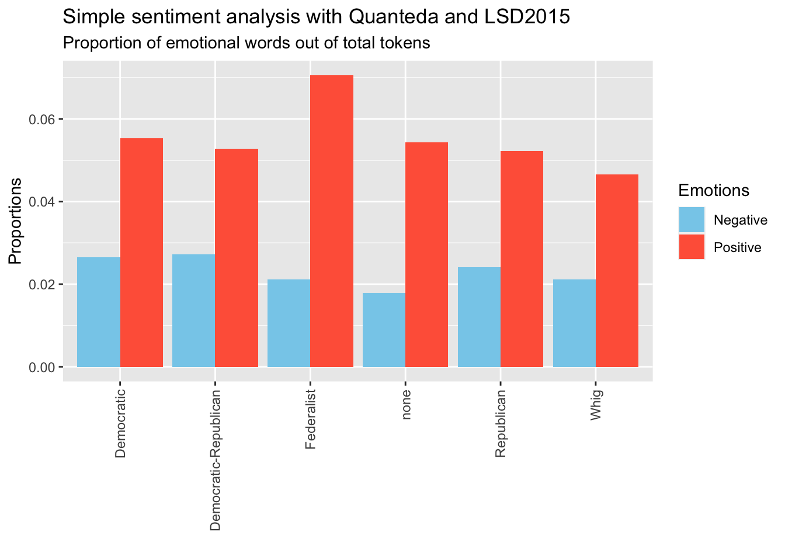

1 + 1 [1] 2Open RStudio and create a project named text-analysis-with-r. This will be your designated workspace during the seminar.
Within the main project folder, create a folder named “data” to store your data sets.
Create a new script and save it as “day1”. This is where you will store today’s code. Check the environment panel and observe that the script file has an .r extension (e.g. day1.r).
To learn how to execute R code:
Type 1+1 in the console and press enter. When writing code in the console, it can be immediately executed by pressing enter, but it won’t be saved.
Type 1+1 in the script. To run an R command from the script, place the cursor on the corresponding line and click the “Run” button at the top of the file window or press “CTRL-Enter”.
Tip: It is crucial to provide comments and annotations to make the code more readable. To add a comment, type a hash symbol (#) followed by your comment or annotation. The hash symbol indicates to R that the line should not be executed.
[1] 2[1] 2# create an object out1 equal to 4
out1 <- sum(2,2)
# create an object out2 equal to 6
out2 <- 6
# use the created objects in a new arithmetic operation
(out1 * out2)/out1^2[1] 1.5install.packages to install the tidyverse package, a collection of R packages designed for data science and particularly useful for data manipulation.library:── Attaching packages ─────────────────────────────────────── tidyverse 1.3.2 ──
✔ ggplot2 3.4.0 ✔ purrr 1.0.1
✔ tibble 3.1.8 ✔ dplyr 1.1.0
✔ tidyr 1.3.0 ✔ stringr 1.5.0
✔ readr 2.1.3 ✔ forcats 1.0.0
── Conflicts ────────────────────────────────────────── tidyverse_conflicts() ──
✖ dplyr::filter() masks stats::filter()
✖ dplyr::lag() masks stats::lag()read.csv function and label it df (short for data frame). Observe that the df object is now available in your environment.write.csv function.df object from the environment using the rm function. Observe that it has been removed from the environment panel.read.csv function and specifying the file path.head function. Observe that the data type is indicated just below the column name. case A_var B_var C_var E_var F_var
1 id_1 -1.27 red 5 2023-01-31 Coding is fun
2 id_2 0.23 blue 2 2023-02-01 The cat is on the table
3 id_3 -1.01 white 9 2023-02-04 Cogito ergo sum
4 id_4 0.25 green 7 2023-02-08 This is a sentence
5 id_5 -0.14 yellow 1 2023-02-09 Ceci n'est pas une pipestr function.'data.frame': 5 obs. of 6 variables:
$ case : chr "id_1" "id_2" "id_3" "id_4" ...
$ A_var: num -1.27 0.23 -1.01 0.25 -0.14
$ B_var: chr "red" "blue" "white" "green" ...
$ C_var: int 5 2 9 7 1
$ E_var: chr "2023-01-31" "2023-02-01" "2023-02-04" "2023-02-08" ...
$ F_var: chr "Coding is fun" "The cat is on the table" "Cogito ergo sum" "This is a sentence" ...$ and the name of the column.[1] "Coding is fun" "The cat is on the table"
[3] "Cogito ergo sum" "This is a sentence"
[5] "Ceci n'est pas une pipe"[1] 5 2 9 7 1# add a new column including numbers from 1 to 5
df$new_column <- c(1,2,3,4,5)
# check the updated data frame
head(df) case A_var B_var C_var E_var F_var new_column
1 id_1 -1.27 red 5 2023-01-31 Coding is fun 1
2 id_2 0.23 blue 2 2023-02-01 The cat is on the table 2
3 id_3 -1.01 white 9 2023-02-04 Cogito ergo sum 3
4 id_4 0.25 green 7 2023-02-08 This is a sentence 4
5 id_5 -0.14 yellow 1 2023-02-09 Ceci n'est pas une pipe 5[1] "RED" "BLUE" "WHITE" "GREEN" "YELLOW"# create a new column with capitalized B_var content
df$B_uppercase <- toupper(df$B_var)
# check the output
head(df) case A_var B_var C_var E_var F_var new_column
1 id_1 -1.27 red 5 2023-01-31 Coding is fun 1
2 id_2 0.23 blue 2 2023-02-01 The cat is on the table 2
3 id_3 -1.01 white 9 2023-02-04 Cogito ergo sum 3
4 id_4 0.25 green 7 2023-02-08 This is a sentence 4
5 id_5 -0.14 yellow 1 2023-02-09 Ceci n'est pas une pipe 5
B_uppercase
1 RED
2 BLUE
3 WHITE
4 GREEN
5 YELLOWYour turn!
Access and print the values in the column A_var and C_var.
Multiply A_var and C_var.
Access and print the values in the column F_var.
In the data frame df, create a new column F_lowercase that contains the F_var values transformed to lowercase with the function tolower.
Check the df data frame using the head and the str function.
Save the object in a CSV file called df_test.csv, in your data folder.
Remove the df object from the environment using the rm function (rm(df)).
Load the df_test.csv file using the read.csv function.
The majority of common text preparation operations for analysis are readily available in text analysis packages. This tutorial will cover basic regex operations and lemmatization.
The data set in this tutorial contains US presidential inaugural address texts, and metadata, from 1789 to present. Download the data set here and save it to your data folder.
Package version: 3.2.4
Unicode version: 14.0
ICU version: 70.1Parallel computing: 8 of 8 threads used.See https://quanteda.io for tutorials and examples.
Attaching package: 'janitor'The following objects are masked from 'package:stats':
chisq.test, fisher.testinaugural_df <- read.csv("data/data_inaugural.csv") %>%
# janitor's function to create well formatted column names
clean_names()
head(inaugural_df) year president first_name party
1 1789 Washington George none
2 1793 Washington George none
3 1797 Adams John Federalist
4 1801 Jefferson Thomas Democratic-Republican
5 1805 Jefferson Thomas Democratic-Republican
6 1809 Madison James Democratic-Republican
texts
1 Fellow-Citizens of the Senate and of the House of Representatives:\n\nAmong the vicissitudes incident to life no event could have filled me with greater anxieties than that of which the notification was transmitted by your order, and received on the 14th day of the present month. On the one hand, I was summoned by my Country, whose voice I can never hear but with veneration and love, from a retreat which I had chosen with the fondest predilection, and, in my flattering hopes, with an immutable decision, as the asylum of my declining years - a retreat which was rendered every day more necessary as well as more dear to me by the addition of habit to inclination, and of frequent interruptions in my health to the gradual waste committed on it by time. On the other hand, the magnitude and difficulty of the trust to which the voice of my country called me, being sufficient to awaken in the wisest and most experienced of her citizens a distrustful scrutiny into his qualifications, could not but overwhelm with despondence one who (inheriting inferior endowments from nature and unpracticed in the duties of civil administration) ought to be peculiarly conscious of his own deficiencies. In this conflict of emotions all I dare aver is that it has been my faithful study to collect my duty from a just appreciation of every circumstance by which it might be affected. All I dare hope is that if, in executing this task, I have been too much swayed by a grateful remembrance of former instances, or by an affectionate sensibility to this transcendent proof of the confidence of my fellow citizens, and have thence too little consulted my incapacity as well as disinclination for the weighty and untried cares before me, my error will be palliated by the motives which mislead me, and its consequences be judged by my country with some share of the partiality in which they originated.\n\nSuch being the impressions under which I have, in obedience to the public summons, repaired to the present station, it would be peculiarly improper to omit in this first official act my fervent supplications to that Almighty Being who rules over the universe, who presides in the councils of nations, and whose providential aids can supply every human defect, that His benediction may consecrate to the liberties and happiness of the people of the United States a Government instituted by themselves for these essential purposes, and may enable every instrument employed in its administration to execute with success the functions allotted to his charge. In tendering this homage to the Great Author of every public and private good, I assure myself that it expresses your sentiments not less than my own, nor those of my fellow citizens at large less than either. No people can be bound to acknowledge and adore the Invisible Hand which conducts the affairs of men more than those of the United States. Every step by which they have advanced to the character of an independent nation seems to have been distinguished by some token of providential agency; and in the important revolution just accomplished in the system of their united government the tranquil deliberations and voluntary consent of so many distinct communities from which the event has resulted can not be compared with the means by which most governments have been established without some return of pious gratitude, along with an humble anticipation of the future blessings which the past seem to presage. These reflections, arising out of the present crisis, have forced themselves too strongly on my mind to be suppressed. You will join with me, I trust, in thinking that there are none under the influence of which the proceedings of a new and free government can more auspiciously commence.\n\nBy the article establishing the executive department it is made the duty of the President "to recommend to your consideration such measures as he shall judge necessary and expedient." The circumstances under which I now meet you will acquit me from entering into that subject further than to refer to the great constitutional charter under which you are assembled, and which, in defining your powers, designates the objects to which your attention is to be given. It will be more consistent with those circumstances, and far more congenial with the feelings which actuate me, to substitute, in place of a recommendation of particular measures, the tribute that is due to the talents, the rectitude, and the patriotism which adorn the characters selected to devise and adopt them. In these honorable qualifications I behold the surest pledges that as on one side no local prejudices or attachments, no separate views nor party animosities, will misdirect the comprehensive and equal eye which ought to watch over this great assemblage of communities and interests, so, on another, that the foundation of our national policy will be laid in the pure and immutable principles of private morality, and the preeminence of free government be exemplified by all the attributes which can win the affections of its citizens and command the respect of the world. I dwell on this prospect with every satisfaction which an ardent love for my country can inspire, since there is no truth more thoroughly established than that there exists in the economy and course of nature an indissoluble union between virtue and happiness; between duty and advantage; between the genuine maxims of an honest and magnanimous policy and the solid rewards of public prosperity and felicity; since we ought to be no less persuaded that the propitious smiles of Heaven can never be expected on a nation that disregards the eternal rules of order and right which Heaven itself has ordained; and since the preservation of the sacred fire of liberty and the destiny of the republican model of government are justly considered, perhaps, as deeply, as finally, staked on the experiment entrusted to the hands of the American people.\n\nBesides the ordinary objects submitted to your care, it will remain with your judgment to decide how far an exercise of the occasional power delegated by the fifth article of the Constitution is rendered expedient at the present juncture by the nature of objections which have been urged against the system, or by the degree of inquietude which has given birth to them. Instead of undertaking particular recommendations on this subject, in which I could be guided by no lights derived from official opportunities, I shall again give way to my entire confidence in your discernment and pursuit of the public good; for I assure myself that whilst you carefully avoid every alteration which might endanger the benefits of an united and effective government, or which ought to await the future lessons of experience, a reverence for the characteristic rights of freemen and a regard for the public harmony will sufficiently influence your deliberations on the question how far the former can be impregnably fortified or the latter be safely and advantageously promoted.\n\nTo the foregoing observations I have one to add, which will be most properly addressed to the House of Representatives. It concerns myself, and will therefore be as brief as possible. When I was first honored with a call into the service of my country, then on the eve of an arduous struggle for its liberties, the light in which I contemplated my duty required that I should renounce every pecuniary compensation. From this resolution I have in no instance departed; and being still under the impressions which produced it, I must decline as inapplicable to myself any share in the personal emoluments which may be indispensably included in a permanent provision for the executive department, and must accordingly pray that the pecuniary estimates for the station in which I am placed may during my continuance in it be limited to such actual expenditures as the public good may be thought to require.\n\nHaving thus imparted to you my sentiments as they have been awakened by the occasion which brings us together, I shall take my present leave; but not without resorting once more to the benign Parent of the Human Race in humble supplication that, since He has been pleased to favor the American people with opportunities for deliberating in perfect tranquillity, and dispositions for deciding with unparalleled unanimity on a form of government for the security of their union and the advancement of their happiness, so His divine blessing may be equally conspicuous in the enlarged views, the temperate consultations, and the wise measures on which the success of this Government must depend.
2 Fellow citizens, I am again called upon by the voice of my country to execute the functions of its Chief Magistrate. When the occasion proper for it shall arrive, I shall endeavor to express the high sense I entertain of this distinguished honor, and of the confidence which has been reposed in me by the people of united America.\n\nPrevious to the execution of any official act of the President the Constitution requires an oath of office. This oath I am now about to take, and in your presence: That if it shall be found during my administration of the Government I have in any instance violated willingly or knowingly the injunctions thereof, I may (besides incurring constitutional punishment) be subject to the upbraidings of all who are now witnesses of the present solemn ceremony.\n\n
3 When it was first perceived, in early times, that no middle course for America remained between unlimited submission to a foreign legislature and a total independence of its claims, men of reflection were less apprehensive of danger from the formidable power of fleets and armies they must determine to resist than from those contests and dissensions which would certainly arise concerning the forms of government to be instituted over the whole and over the parts of this extensive country. Relying, however, on the purity of their intentions, the justice of their cause, and the integrity and intelligence of the people, under an overruling Providence which had so signally protected this country from the first, the representatives of this nation, then consisting of little more than half its present number, not only broke to pieces the chains which were forging and the rod of iron that was lifted up, but frankly cut asunder the ties which had bound them, and launched into an ocean of uncertainty.\n\nThe zeal and ardor of the people during the Revolutionary war, supplying the place of government, commanded a degree of order sufficient at least for the temporary preservation of society. The Confederation which was early felt to be necessary was prepared from the models of the Batavian and Helvetic confederacies, the only examples which remain with any detail and precision in history, and certainly the only ones which the people at large had ever considered. But reflecting on the striking difference in so many particulars between this country and those where a courier may go from the seat of government to the frontier in a single day, it was then certainly foreseen by some who assisted in Congress at the formation of it that it could not be durable.\n\nNegligence of its regulations, inattention to its recommendations, if not disobedience to its authority, not only in individuals but in States, soon appeared with their melancholy consequences - universal languor, jealousies and rivalries of States, decline of navigation and commerce, discouragement of necessary manufactures, universal fall in the value of lands and their produce, contempt of public and private faith, loss of consideration and credit with foreign nations, and at length in discontents, animosities, combinations, partial conventions, and insurrection, threatening some great national calamity.\n\nIn this dangerous crisis the people of America were not abandoned by their usual good sense, presence of mind, resolution, or integrity. Measures were pursued to concert a plan to form a more perfect union, establish justice, insure domestic tranquillity, provide for the common defense, promote the general welfare, and secure the blessings of liberty. The public disquisitions, discussions, and deliberations issued in the present happy Constitution of Government.\n\nEmployed in the service of my country abroad during the whole course of these transactions, I first saw the Constitution of the United States in a foreign country. Irritated by no literary altercation, animated by no public debate, heated by no party animosity, I read it with great satisfaction, as the result of good heads prompted by good hearts, as an experiment better adapted to the genius, character, situation, and relations of this nation and country than any which had ever been proposed or suggested. In its general principles and great outlines it was conformable to such a system of government as I had ever most esteemed, and in some States, my own native State in particular, had contributed to establish. Claiming a right of suffrage, in common with my fellow-citizens, in the adoption or rejection of a constitution which was to rule me and my posterity, as well as them and theirs, I did not hesitate to express my approbation of it on all occasions, in public and in private. It was not then, nor has been since, any objection to it in my mind that the Executive and Senate were not more permanent. Nor have I ever entertained a thought of promoting any alteration in it but such as the people themselves, in the course of their experience, should see and feel to be necessary or expedient, and by their representatives in Congress and the State legislatures, according to the Constitution itself, adopt and ordain.\n\nReturning to the bosom of my country after a painful separation from it for ten years, I had the honor to be elected to a station under the new order of things, and I have repeatedly laid myself under the most serious obligations to support the Constitution. The operation of it has equaled the most sanguine expectations of its friends, and from an habitual attention to it, satisfaction in its administration, and delight in its effects upon the peace, order, prosperity, and happiness of the nation I have acquired an habitual attachment to it and veneration for it.\n\nWhat other form of government, indeed, can so well deserve our esteem and love?\n\nThere may be little solidity in an ancient idea that congregations of men into cities and nations are the most pleasing objects in the sight of superior intelligences, but this is very certain, that to a benevolent human mind there can be no spectacle presented by any nation more pleasing, more noble, majestic, or august, than an assembly like that which has so often been seen in this and the other Chamber of Congress, of a Government in which the Executive authority, as well as that of all the branches of the Legislature, are exercised by citizens selected at regular periods by their neighbors to make and execute laws for the general good. Can anything essential, anything more than mere ornament and decoration, be added to this by robes and diamonds? Can authority be more amiable and respectable when it descends from accidents or institutions established in remote antiquity than when it springs fresh from the hearts and judgments of an honest and enlightened people? For it is the people only that are represented. It is their power and majesty that is reflected, and only for their good, in every legitimate government, under whatever form it may appear. The existence of such a government as ours for any length of time is a full proof of a general dissemination of knowledge and virtue throughout the whole body of the people. And what object or consideration more pleasing than this can be presented to the human mind? If national pride is ever justifiable or excusable it is when it springs, not from power or riches, grandeur or glory, but from conviction of national innocence, information, and benevolence.\n\nIn the midst of these pleasing ideas we should be unfaithful to ourselves if we should ever lose sight of the danger to our liberties if anything partial or extraneous should infect the purity of our free, fair, virtuous, and independent elections. If an election is to be determined by a majority of a single vote, and that can be procured by a party through artifice or corruption, the Government may be the choice of a party for its own ends, not of the nation for the national good. If that solitary suffrage can be obtained by foreign nations by flattery or menaces, by fraud or violence, by terror, intrigue, or venality, the Government may not be the choice of the American people, but of foreign nations. It may be foreign nations who govern us, and not we, the people, who govern ourselves; and candid men will acknowledge that in such cases choice would have little advantage to boast of over lot or chance.\n\nSuch is the amiable and interesting system of government (and such are some of the abuses to which it may be exposed) which the people of America have exhibited to the admiration and anxiety of the wise and virtuous of all nations for eight years under the administration of a citizen who, by a long course of great actions, regulated by prudence, justice, temperance, and fortitude, conducting a people inspired with the same virtues and animated with the same ardent patriotism and love of liberty to independence and peace, to increasing wealth and unexampled prosperity, has merited the gratitude of his fellow-citizens, commanded the highest praises of foreign nations, and secured immortal glory with posterity.\n\nIn that retirement which is his voluntary choice may he long live to enjoy the delicious recollection of his services, the gratitude of mankind, the happy fruits of them to himself and the world, which are daily increasing, and that splendid prospect of the future fortunes of this country which is opening from year to year. His name may be still a rampart, and the knowledge that he lives a bulwark, against all open or secret enemies of his country's peace. This example has been recommended to the imitation of his successors by both Houses of Congress and by the voice of the legislatures and the people throughout the nation.\n\nOn this subject it might become me better to be silent or to speak with diffidence; but as something may be expected, the occasion, I hope, will be admitted as an apology if I venture to say that if a preference, upon principle, of a free republican government, formed upon long and serious reflection, after a diligent and impartial inquiry after truth; if an attachment to the Constitution of the United States, and a conscientious determination to support it until it shall be altered by the judgments and wishes of the people, expressed in the mode prescribed in it; if a respectful attention to the constitutions of the individual States and a constant caution and delicacy toward the State governments; if an equal and impartial regard to the rights, interest, honor, and happiness of all the States in the Union, without preference or regard to a northern or southern, an eastern or western, position, their various political opinions on unessential points or their personal attachments; if a love of virtuous men of all parties and denominations; if a love of science and letters and a wish to patronize every rational effort to encourage schools, colleges, universities, academies, and every institution for propagating knowledge, virtue, and religion among all classes of the people, not only for their benign influence on the happiness of life in all its stages and classes, and of society in all its forms, but as the only means of preserving our Constitution from its natural enemies, the spirit of sophistry, the spirit of party, the spirit of intrigue, the profligacy of corruption, and the pestilence of foreign influence, which is the angel of destruction to elective governments; if a love of equal laws, of justice, and humanity in the interior administration; if an inclination to improve agriculture, commerce, and manufacturers for necessity, convenience, and defense; if a spirit of equity and humanity toward the aboriginal nations of America, and a disposition to meliorate their condition by inclining them to be more friendly to us, and our citizens to be more friendly to them; if an inflexible determination to maintain peace and inviolable faith with all nations, and that system of neutrality and impartiality among the belligerent powers of Europe which has been adopted by this Government and so solemnly sanctioned by both Houses of Congress and applauded by the legislatures of the States and the public opinion, until it shall be otherwise ordained by Congress; if a personal esteem for the French nation, formed in a residence of seven years chiefly among them, and a sincere desire to preserve the friendship which has been so much for the honor and interest of both nations; if, while the conscious honor and integrity of the people of America and the internal sentiment of their own power and energies must be preserved, an earnest endeavor to investigate every just cause and remove every colorable pretense of complaint; if an intention to pursue by amicable negotiation a reparation for the injuries that have been committed on the commerce of our fellow-citizens by whatever nation, and if success can not be obtained, to lay the facts before the Legislature, that they may consider what further measures the honor and interest of the Government and its constituents demand; if a resolution to do justice as far as may depend upon me, at all times and to all nations, and maintain peace, friendship, and benevolence with all the world; if an unshaken confidence in the honor, spirit, and resources of the American people, on which I have so often hazarded my all and never been deceived; if elevated ideas of the high destinies of this country and of my own duties toward it, founded on a knowledge of the moral principles and intellectual improvements of the people deeply engraven on my mind in early life, and not obscured but exalted by experience and age; and, with humble reverence, I feel it to be my duty to add, if a veneration for the religion of a people who profess and call themselves Christians, and a fixed resolution to consider a decent respect for Christianity among the best recommendations for the public service, can enable me in any degree to comply with your wishes, it shall be my strenuous endeavor that this sagacious injunction of the two Houses shall not be without effect.\n\nWith this great example before me, with the sense and spirit, the faith and honor, the duty and interest, of the same American people pledged to support the Constitution of the United States, I entertain no doubt of its continuance in all its energy, and my mind is prepared without hesitation to lay myself under the most solemn obligations to support it to the utmost of my power.\n\nAnd may that Being who is supreme over all, the Patron of Order, the Fountain of Justice, and the Protector in all ages of the world of virtuous liberty, continue His blessing upon this nation and its Government and give it all possible success and duration consistent with the ends of His providence.
4 Friends and Fellow Citizens:\n\nCalled upon to undertake the duties of the first executive office of our country, I avail myself of the presence of that portion of my fellow citizens which is here assembled to express my grateful thanks for the favor with which they have been pleased to look toward me, to declare a sincere consciousness that the task is above my talents, and that I approach it with those anxious and awful presentiments which the greatness of the charge and the weakness of my powers so justly inspire. A rising nation, spread over a wide and fruitful land, traversing all the seas with the rich productions of their industry, engaged in commerce with nations who feel power and forget right, advancing rapidly to destinies beyond the reach of mortal eye - when I contemplate these transcendent objects, and see the honor, the happiness, and the hopes of this beloved country committed to the issue, and the auspices of this day, I shrink from the contemplation, and humble myself before the magnitude of the undertaking. Utterly, indeed, should I despair did not the presence of many whom I here see remind me that in the other high authorities provided by our Constitution I shall find resources of wisdom, of virtue, and of zeal on which to rely under all difficulties. To you, then, gentlemen, who are charged with the sovereign functions of legislation, and to those associated with you, I look with encouragement for that guidance and support which may enable us to steer with safety the vessel in which we are all embarked amidst the conflicting elements of a troubled world.\n\nDuring the contest of opinion through which we have passed the animation of discussions and of exertions has sometimes worn an aspect which might impose on strangers unused to think freely and to speak and to write what they think; but this being now decided by the voice of the nation, announced according to the rules of the Constitution, all will, of course, arrange themselves under the will of the law, and unite in common efforts for the common good. All, too, will bear in mind this sacred principle, that though the will of the majority is in all cases to prevail, that will to be rightful must be reasonable; that the minority possess their equal rights, which equal law must protect, and to violate would be oppression. Let us, then, fellow citizens, unite with one heart and one mind. Let us restore to social intercourse that harmony and affection without which liberty and even life itself are but dreary things. And let us reflect that, having banished from our land that religious intolerance under which mankind so long bled and suffered, we have yet gained little if we countenance a political intolerance as despotic, as wicked, and capable of as bitter and bloody persecutions. During the throes and convulsions of the ancient world, during the agonizing spasms of infuriated man, seeking through blood and slaughter his long-lost liberty, it was not wonderful that the agitation of the billows should reach even this distant and peaceful shore; that this should be more felt and feared by some and less by others, and should divide opinions as to measures of safety. But every difference of opinion is not a difference of principle. We have called by different names brethren of the same principle. We are all Republicans, we are all Federalists. If there be any among us who would wish to dissolve this Union or to change its republican form, let them stand undisturbed as monuments of the safety with which error of opinion may be tolerated where reason is left free to combat it. I know, indeed, that some honest men fear that a republican government can not be strong, that this Government is not strong enough; but would the honest patriot, in the full tide of successful experiment, abandon a government which has so far kept us free and firm on the theoretic and visionary fear that this Government, the world's best hope, may by possibility want energy to preserve itself? I trust not. I believe this, on the contrary, the strongest Government on earth. I believe it the only one where every man, at the call of the law, would fly to the standard of the law, and would meet invasions of the public order as his own personal concern. Sometimes it is said that man can not be trusted with the government of himself. Can he, then, be trusted with the government of others? Or have we found angels in the forms of kings to govern him? Let history answer this question.\n\nLet us, then, with courage and confidence pursue our own Federal and Republican principles, our attachment to union and representative government. Kindly separated by nature and a wide ocean from the exterminating havoc of one quarter of the globe; too high-minded to endure the degradations of the others; possessing a chosen country, with room enough for our descendants to the thousandth and thousandth generation; entertaining a due sense of our equal right to the use of our own faculties, to the acquisitions of our own industry, to honor and confidence from our fellow citizens, resulting not from birth, but from our actions and their sense of them; enlightened by a benign religion, professed, indeed, and practiced in various forms, yet all of them inculcating honesty, truth, temperance, gratitude, and the love of man; acknowledging and adoring an overruling Providence, which by all its dispensations proves that it delights in the happiness of man here and his greater happiness hereafter - with all these blessings, what more is necessary to make us a happy and a prosperous people? Still one thing more, fellow citizens - a wise and frugal Government, which shall restrain men from injuring one another, shall leave them otherwise free to regulate their own pursuits of industry and improvement, and shall not take from the mouth of labor the bread it has earned. This is the sum of good government, and this is necessary to close the circle of our felicities.\n\nAbout to enter, fellow-citizens, on the exercise of duties which comprehend everything dear and valuable to you, it is proper you should understand what I deem the essential principles of our Government, and consequently those which ought to shape its Administration. I will compress them within the narrowest compass they will bear, stating the general principle, but not all its limitations. Equal and exact justice to all men, of whatever state or persuasion, religious or political; peace, commerce, and honest friendship with all nations, entangling alliances with none; the support of the State governments in all their rights, as the most competent administrations for our domestic concerns and the surest bulwarks against antirepublican tendencies; the preservation of the General Government in its whole constitutional vigor, as the sheet anchor of our peace at home and safety abroad; a jealous care of the right of election by the people - a mild and safe corrective of abuses which are lopped by the sword of revolution where peaceable remedies are unprovided; absolute acquiescence in the decisions of the majority, the vital principle of republics, from which is no appeal but to force, the vital principle and immediate parent of despotism; a well disciplined militia, our best reliance in peace and for the first moments of war, till regulars may relieve them; the supremacy of the civil over the military authority; economy in the public expense, that labor may be lightly burthened; the honest payment of our debts and sacred preservation of the public faith; encouragement of agriculture, and of commerce as its handmaid; the diffusion of information and arraignment of all abuses at the bar of the public reason; freedom of religion; freedom of the press, and freedom of person under the protection of the habeas corpus, and trial by juries impartially selected. These principles form the bright constellation which has gone before us and guided our steps through an age of revolution and reformation. The wisdom of our sages and blood of our heroes have been devoted to their attainment. They should be the creed of our political faith, the text of civic instruction, the touchstone by which to try the services of those we trust; and should we wander from them in moments of error or of alarm, let us hasten to retrace our steps and to regain the road which alone leads to peace, liberty, and safety.\n\nI repair, then, fellow-citizens, to the post you have assigned me. With experience enough in subordinate offices to have seen the difficulties of this the greatest of all, I have learnt to expect that it will rarely fall to the lot of imperfect man to retire from this station with the reputation and the favor which bring him into it. Without pretensions to that high confidence you reposed in our first and greatest revolutionary character, whose preeminent services had entitled him to the first place in his country's love and destined for him the fairest page in the volume of faithful history, I ask so much confidence only as may give firmness and effect to the legal administration of your affairs. I shall often go wrong through defect of judgment. When right, I shall often be thought wrong by those whose positions will not command a view of the whole ground. I ask your indulgence for my own errors, which will never be intentional, and your support against the errors of others, who may condemn what they would not if seen in all its parts. The approbation implied by your suffrage is a great consolation to me for the past, and my future solicitude will be to retain the good opinion of those who have bestowed it in advance, to conciliate that of others by doing them all the good in my power, and to be instrumental to the happiness and freedom of all.\n\nRelying, then, on the patronage of your good will, I advance with obedience to the work, ready to retire from it whenever you become sensible how much better choice it is in your power to make. And may that Infinite Power which rules the destinies of the universe lead our councils to what is best, and give them a favorable issue for your peace and prosperity.\n\n
5 Proceeding, fellow citizens, to that qualification which the Constitution requires before my entrance on the charge again conferred on me, it is my duty to express the deep sense I entertain of this new proof of confidence from my fellow citizens at large, and the zeal with which it inspires me so to conduct myself as may best satisfy their just expectations.\n\nOn taking this station on a former occasion I declared the principles on which I believed it my duty to administer the affairs of our Commonwealth. MY conscience tells me I have on every occasion acted up to that declaration according to its obvious import and to the understanding of every candid mind.\n\nIn the transaction of your foreign affairs we have endeavored to cultivate the friendship of all nations, and especially of those with which we have the most important relations. We have done them justice on all occasions, favored where favor was lawful, and cherished mutual interests and intercourse on fair and equal terms. We are firmly convinced, and we act on that conviction, that with nations as with individuals our interests soundly calculated will ever be found inseparable from our moral duties, and history bears witness to the fact that a just nation is trusted on its word when recourse is had to armaments and wars to bridle others.\n\nAt home, fellow citizens, you best know whether we have done well or ill. The suppression of unnecessary offices, of useless establishments and expenses, enabled us to discontinue our internal taxes. These, covering our land with officers and opening our doors to their intrusions, had already begun that process of domiciliary vexation which once entered is scarcely to be restrained from reaching successively every article of property and produce. If among these taxes some minor ones fell which had not been inconvenient, it was because their amount would not have paid the officers who collected them, and because, if they had any merit, the State authorities might adopt them instead of others less approved.\n\nThe remaining revenue on the consumption of foreign articles is paid chiefly by those who can afford to add foreign luxuries to domestic comforts, being collected on our seaboard and frontiers only, and incorporated with the transactions of our mercantile citizens, it may be the pleasure and the pride of an American to ask, What farmer, what mechanic, what laborer ever sees a taxgatherer of the United States? These contributions enable us to support the current expenses of the Government, to fulfill contracts with foreign nations, to extinguish the native right of soil within our limits, to extend those limits, and to apply such a surplus to our public debts as places at a short day their final redemption, and that redemption once effected the revenue thereby liberated may, by a just repartition of it among the States and a corresponding amendment of the Constitution, be applied in time of peace to rivers, canals, roads, arts, manufactures, education, and other great objects within each State. In time of war, if injustice by ourselves or others must sometimes produce war, increased as the same revenue will be by increased population and consumption, and aided by other resources reserved for that crisis, it may meet within the year all the expenses of the year without encroaching on the rights of future generations by burthening them with the debts of the past. War will then be but a suspension of useful works, and a return to a state of peace, a return to the progress of improvement.\n\nI have said, fellow citizens, that the income reserved had enabled us to extend our limits, but that extension may possibly pay for itself before we are called on, and in the meantime may keep down the accruing interest; in all events, it will replace the advances we shall have made. I know that the acquisition of Louisiana had been disapproved by some from a candid apprehension that the enlargement of our territory would endanger its union. But who can limit the extent to which the federative principle may operate effectively? The larger our association the less will it be shaken by local passions; and in any view is it not better that the opposite bank of the Mississippi should be settled by our own brethren and children than by strangers of another family? With which should we be most likely to live in harmony and friendly intercourse?\n\nIn matters of religion I have considered that its free exercise is placed by the Constitution independent of the powers of the General Government. I have therefore undertaken on no occasion to prescribe the religious exercises suited to it, but have left them, as the Constitution found them, under the direction and discipline of the church or state authorities acknowledged by the several religious societies.\n\nThe aboriginal inhabitants of these countries I have regarded with the commiseration their history inspires. Endowed with the faculties and the rights of men, breathing an ardent love of liberty and independence, and occupying a country which left them no desire but to be undisturbed, the stream of overflowing population from other regions directed itself on these shores; without power to divert or habits to contend against it, they have been overwhelmed by the current or driven before it; now reduced within limits too narrow for the hunter's state, humanity enjoins us to teach them agriculture and the domestic arts; to encourage them to that industry which alone can enable them to maintain their place in existence and to prepare them in time for that state of society which to bodily comforts adds the improvement of the mind and morals. We have therefore liberally furnished them with the implements of husbandry and household use; we have placed among them instructors in the arts of first necessity, and they are covered with the aegis of the law against aggressors from among ourselves.\n\nBut the endeavors to enlighten them on the fate which awaits their present course of life, to induce them to exercise their reason, follow its dictates, and change their pursuits with the change of circumstances have powerful obstacles to encounter; they are combated by the habits of their bodies, prejudices of their minds, ignorance, pride, and the influence of interested and crafty individuals among them who feel themselves something in the present order of things and fear to become nothing in any other. These persons inculcate a sanctimonious reverence for the customs of their ancestors; that whatsoever they did must be done through all time; that reason is a false guide, and to advance under its counsel in their physical, moral, or political condition is perilous innovation; that their duty is to remain as their Creator made them, ignorance being safety and knowledge full of danger; in short, my friends, among them also is seen the action and counteraction of good sense and of bigotry; they too have their antiphilosophists who find an interest in keeping things in their present state, who dread reformation, and exert all their faculties to maintain the ascendancy of habit over the duty of improving our reason and obeying its mandates.\n\nIn giving these outlines I do not mean, fellow citizens, to arrogate to myself the merit of the measures. That is due, in the first place, to the reflecting character of our citizens at large, who, by the weight of public opinion, influence and strengthen the public measures. It is due to the sound discretion with which they select from among themselves those to whom they confide the legislative duties. It is due to the zeal and wisdom of the characters thus selected, who lay the foundations of public happiness in wholesome laws, the execution of which alone remains for others, and it is due to the able and faithful auxiliaries, whose patriotism has associated them with me in the executive functions.\n\nDuring this course of administration, and in order to disturb it, the artillery of the press has been leveled against us, charged with whatsoever its licentiousness could devise or dare. These abuses of an institution so important to freedom and science are deeply to be regretted, inasmuch as they tend to lessen its usefulness and to sap its safety. They might, indeed, have been corrected by the wholesome punishments reserved to and provided by the laws of the several States against falsehood and defamation, but public duties more urgent press on the time of public servants, and the offenders have therefore been left to find their punishment in the public indignation.\n\nNor was it uninteresting to the world that an experiment should be fairly and fully made, whether freedom of discussion, unaided by power, is not sufficient for the propagation and protection of truth - whether a government conducting itself in the true spirit of its constitution, with zeal and purity, and doing no act which it would be unwilling the whole world should witness, can be written down by falsehood and defamation. The experiment has been tried; you have witnessed the scene; our fellow citizens looked on, cool and collected; they saw the latent source from which these outrages proceeded; they gathered around their public functionaries, and when the Constitution called them to the decision by suffrage, they pronounced their verdict, honorable to those who had served them and consolatory to the friend of man who believes that he may be trusted with the control of his own affairs.\n\nNo inference is here intended that the laws provided by the States against false and defamatory publications should not be enforced; he who has time renders a service to public morals and public tranquillity in reforming these abuses by the salutary coercions of the law; but the experiment is noted to prove that, since truth and reason have maintained their ground against false opinions in league with false facts, the press, confined to truth, needs no other legal restraint; the public judgment will correct false reasoning and opinions on a full hearing of all parties; and no other definite line can be drawn between the inestimable liberty of the press and its demoralizing licentiousness. If there be still improprieties which this rule would not restrain, its supplement must be sought in the censorship of public opinion.\n\nContemplating the union of sentiment now manifested so generally as auguring harmony and happiness to our future course, I offer to our country sincere congratulations. With those, too, not yet rallied to the same point the disposition to do so is gaining strength; facts are piercing through the veil drawn over them, and our doubting brethren will at length see that the mass of their fellow citizens with whom they can not yet resolve to act as to principles and measures, think as they think and desire what they desire; that our wish as well as theirs is that the public efforts may be directed honestly to the public good, that peace be cultivated, civil and religious liberty unassailed, law and order preserved, equality of rights maintained, and that state of property, equal or unequal, which results to every man from his own industry or that of his father's. When satisfied of these views it is not in human nature that they should not approve and support them. In the meantime let us cherish them with patient affection, let us do them justice, and more than justice, in all competitions of interest; and we need not doubt that truth, reason, and their own interests will at length prevail, will gather them into the fold of their country, and will complete that entire union of opinion which gives to a nation the blessing of harmony and the benefit of all its strength.\n\nI shall now enter on the duties to which my fellow citizens have again called me, and shall proceed in the spirit of those principles which they have approved. I fear not that any motives of interest may lead me astray; I am sensible of no passion which could seduce me knowingly from the path of justice, but the weaknesses of human nature and the limits of my own understanding will produce errors of judgment sometimes injurious to your interests. I shall need, therefore, all the indulgence which I have heretofore experienced from my constituents; the want of it will certainly not lessen with increasing years. I shall need, too, the favor of that Being in whose hands we are, who led our fathers, as Israel of old, from their native land and planted them in a country flowing with all the necessaries and comforts of life; who has covered our infancy with His providence and our riper years with His wisdom and power, and to whose goodness I ask you to join in supplications with me that He will so enlighten the minds of your servants, guide their councils, and prosper their measures that whatsoever they do shall result in your good, and shall secure to you the peace, friendship, and approbation of all nations.
6 Unwilling to depart from examples of the most revered authority, I avail myself of the occasion now presented to express the profound impression made on me by the call of my country to the station to the duties of which I am about to pledge myself by the most solemn of sanctions. So distinguished a mark of confidence, proceeding from the deliberate and tranquil suffrage of a free and virtuous nation, would under any circumstances have commanded my gratitude and devotion, as well as filled me with an awful sense of the trust to be assumed. Under the various circumstances which give peculiar solemnity to the existing period, I feel that both the honor and the responsibility allotted to me are inexpressibly enhanced.\n\nThe present situation of the world is indeed without a parallel and that of our own country full of difficulties. The pressure of these, too, is the more severely felt because they have fallen upon us at a moment when the national prosperity being at a height not before attained, the contrast resulting from the change has been rendered the more striking. Under the benign influence of our republican institutions, and the maintenance of peace with all nations whilst so many of them were engaged in bloody and wasteful wars, the fruits of a just policy were enjoyed in an unrivaled growth of our faculties and resources. Proofs of this were seen in the improvements of agriculture, in the successful enterprises of commerce, in the progress of manufacturers and useful arts, in the increase of the public revenue and the use made of it in reducing the public debt, and in the valuable works and establishments everywhere multiplying over the face of our land.\n\nIt is a precious reflection that the transition from this prosperous condition of our country to the scene which has for some time been distressing us is not chargeable on any unwarrantable views, nor, as I trust, on any involuntary errors in the public councils. Indulging no passions which trespass on the rights or the repose of other nations, it has been the true glory of the United States to cultivate peace by observing justice, and to entitle themselves to the respect of the nations at war by fulfilling their neutral obligations with the most scrupulous impartiality. If there be candor in the world, the truth of these assertions will not be questioned; posterity at least will do justice to them.\n\nThis unexceptionable course could not avail against the injustice and violence of the belligerent powers. In their rage against each other, or impelled by more direct motives, principles of retaliation have been introduced equally contrary to universal reason and acknowledged law. How long their arbitrary edicts will be continued in spite of the demonstrations that not even a pretext for them has been given by the United States, and of the fair and liberal attempt to induce a revocation of them, can not be anticipated. Assuring myself that under every vicissitude the determined spirit and united councils of the nation will be safeguards to its honor and its essential interests, I repair to the post assigned me with no other discouragement than what springs from my own inadequacy to its high duties. If I do not sink under the weight of this deep conviction it is because I find some support in a consciousness of the purposes and a confidence in the principles which I bring with me into this arduous service.\n\nTo cherish peace and friendly intercourse with all nations having correspondent dispositions; to maintain sincere neutrality toward belligerent nations; to prefer in all cases amicable discussion and reasonable accommodation of differences to a decision of them by an appeal to arms; to exclude foreign intrigues and foreign partialities, so degrading to all countries and so baneful to free ones; to foster a spirit of independence too just to invade the rights of others, too proud to surrender our own, too liberal to indulge unworthy prejudices ourselves and too elevated not to look down upon them in others; to hold the union of the States as the basis of their peace and happiness; to support the Constitution, which is the cement of the Union, as well in its limitations as in its authorities; to respect the rights and authorities reserved to the States and to the people as equally incorporated with and essential to the success of the general system; to avoid the slightest interference with the right of conscience or the functions of religion, so wisely exempted from civil jurisdiction; to preserve in their full energy the other salutary provisions in behalf of private and personal rights, and of the freedom of the press; to observe economy in public expenditures; to liberate the public resources by an honorable discharge of the public debts; to keep within the requisite limits a standing military force, always remembering that an armed and trained militia is the firmest bulwark of republics - that without standing armies their liberty can never be in danger, nor with large ones safe; to promote by authorized means improvements friendly to agriculture, to manufactures, and to external as well as internal commerce; to favor in like manner the advancement of science and the diffusion of information as the best aliment to true liberty; to carry on the benevolent plans which have been so meritoriously applied to the conversion of our aboriginal neighbors from the degradation and wretchedness of savage life to a participation of the improvements of which the human mind and manners are susceptible in a civilized state - as far as sentiments and intentions such as these can aid the fulfillment of my duty, they will be a resource which can not fail me.\n\nIt is my good fortune, moreover, to have the path in which I am to tread lighted by examples of illustrious services successfully rendered in the most trying difficulties by those who have marched before me. Of those of my immediate predecessor it might least become me here to speak. I may, however, be pardoned for not suppressing the sympathy with which my heart is full in the rich reward he enjoys in the benedictions of a beloved country, gratefully bestowed or exalted talents zealously devoted through a long career to the advancement of its highest interest and happiness.\n\nBut the source to which I look or the aids which alone can supply my deficiencies is in the well-tried intelligence and virtue of my fellow-citizens, and in the counsels of those representing them in the other departments associated in the care of the national interests. In these my confidence will under every difficulty be best placed, next to that which we have all been encouraged to feel in the guardianship and guidance of that Almighty Being whose power regulates the destiny of nations, whose blessings have been so conspicuously dispensed to this rising Republic, and to whom we are bound to address our devout gratitude for the past, as well as our fervent supplications and best hopes for the future.The gsub function in R can be utilized to match a pattern, indicated by the first argument, and replace it with the specified second argument. In this case, the first argument can be a regular expression.
Tip: What is the substr function? Read the function documentation by typing ?substr in the Console.
inaugural_df$texts_clean <- gsub("[[:punct:]]+", " ",
inaugural_df$texts)
first_5_rows <- head(inaugural_df$texts_clean, 5)
substr(first_5_rows, start = 1, stop = 50)[1] "Fellow Citizens of the Senate and of the House of "
[2] "Fellow citizens I am again called upon by the voi"
[3] "When it was first perceived in early times that "
[4] "Friends and Fellow Citizens \n\nCalled upon to under"
[5] "Proceeding fellow citizens to that qualification" Convert to lowercase using the function tolower.
Stopwords can be conveniently removed using text analysis packages, which often include pre-compiled stopword lists in different languages, such as the stopwords package. Other packages like Quanteda import stopword lists from this package.
[1] "i" "me" "my" "myself" "we" "our" [1] "ad" "al" "allo" "ai" "agli" "all" Lemmatization is a more complex process, typically provided by tools that also include part-of-speech annotation. One such tool is TreeTagger, which is independent from R but utilized by other R packages that provide lemmatization functions, such as textstem. Another option is UDPipe, which we will be using in this tutorial.
Relevant part of the output are lemma and upos (Universal Part-of-Speech tags).
doc_id paragraph_id sentence_id
1 doc1 1 1
2 doc1 1 1
3 doc1 1 1
4 doc1 1 1
5 doc1 1 1
6 doc1 1 1
sentence token_id
1 fellow citizens of the senate and of the house of representatives 1
2 fellow citizens of the senate and of the house of representatives 2
3 fellow citizens of the senate and of the house of representatives 3
4 fellow citizens of the senate and of the house of representatives 4
5 fellow citizens of the senate and of the house of representatives 5
6 fellow citizens of the senate and of the house of representatives 6
token lemma upos xpos feats head_token_id dep_rel
1 fellow fellow ADJ JJ Degree=Pos <NA> <NA>
2 citizens citizen NOUN NNS Number=Plur <NA> <NA>
3 of of ADP IN <NA> <NA> <NA>
4 the the DET DT Definite=Def|PronType=Art <NA> <NA>
5 senate senate NOUN NN Number=Sing <NA> <NA>
6 and and CCONJ CC <NA> <NA> <NA>
deps misc
1 <NA> <NA>
2 <NA> <NA>
3 <NA> <NA>
4 <NA> <NA>
5 <NA> <NA>
6 <NA> <NA>ggplot(annotated_text) +
geom_bar(aes(x=fct_infreq(upos)), fill="snow3", col="grey20") +
theme_linedraw() +
theme(axis.text.x = element_text(angle = 90, vjust = 0.5, hjust=1)) +
xlab("UPOS")
With this annotation, texts can be lemmatized or the analysis can be focused on specific words, such as nouns, while excluding others.
In this tutorial, we utilize the Quanteda package to clean the data and generate a corpus and document term matrix. Additionally, we conduct basic exploratory analysis.
[1] "year" "president" "first_name" "party" "texts" [1] 1789 1793 1797 1801 1805 1809 1813 1817 1821 1825 1829 1833 1837 1841 1845
[16] 1849 1853 1857 1861 1865 1869 1873 1877 1881 1885 1889 1893 1897 1901 1905
[31] 1909 1913 1917 1921 1925 1929 1933 1937 1941 1945 1949 1953 1957 1961 1965
[46] 1969 1973 1977 1981 1985 1989 1993 1997 2001 2005 2009 2013 2017 2021 Text Types Tokens Sentences
1 text1 594 1431 1
2 text2 90 135 1
3 text3 794 2322 1A corpus can be organized into groups using grouping variables.
# statistics by party
inaug_corpus_party <- corpus_group(inaug_corpus, groups = party)
summary(inaug_corpus_party, 3)[,1:4] Text Types Tokens Sentences
1 Democratic 5277 42003 1
2 Democratic-Republican 2944 17065 1
3 Federalist 794 2322 1It is possible to create sub-corpora that fulfill one or more criteria.
The next step is tokenization, during which basic text cleaning procedures can be applied.
We will begin by creating a token object that retains the original text.
Tokens consisting of 2 documents and 5 docvars.
text1 :
[1] "fellow" "citizens" "of" "the"
[5] "senate" "and" "of" "the"
[9] "house" "of" "representatives" "among"
[ ... and 1,419 more ]
text2 :
[1] "fellow" "citizens" "i" "am" "again" "called"
[7] "upon" "by" "the" "voice" "of" "my"
[ ... and 123 more ]Next, we perform standard text cleaning operations.
Here, we can utilize the UDPipe annotated text to lemmatize the text.
inaug_tokens_lemma <- inaug_tokens_clean %>%
tokens_replace(
# search for the original token
pattern = annotated_text$token,
# replace it with its canonical form
replacement = annotated_text$lemma,
# use exact matching
valuetype = "fixed")
head(inaug_tokens_lemma, 2)Tokens consisting of 2 documents and 5 docvars.
text1 :
[1] "fellow" "citizen" "senate" "house"
[5] "representatives" "among" "vicissitude" "incident"
[9] "life" "event" "fill" "greater"
[ ... and 641 more ]
text2 :
[1] "fellow" "citizen" "call" "upon" "voice"
[6] "country" "execute" "function" "chief" "magistrate"
[11] "occasion" "proper"
[ ... and 50 more ]We can concentrate on specific textual features, like nouns.
inaug_tokens_nouns <- inaug_tokens_lemma %>%
tokens_select(annotated_text$lemma[annotated_text$upos=="NOUN"],
selection = "keep",
valuetype = "fixed")
head(inaug_tokens_nouns, 2)Tokens consisting of 2 documents and 5 docvars.
text1 :
[1] "fellow" "citizen" "senate" "house"
[5] "representatives" "vicissitude" "incident" "life"
[9] "event" "greater" "anxiety" "notification"
[ ... and 418 more ]
text2 :
[1] "fellow" "citizen" "call" "upon" "voice"
[6] "country" "function" "chief" "magistrate" "occasion"
[11] "proper" "shall"
[ ... and 34 more ]We can now create a Document Feature Matrix.
[1] 59 3747Document-feature matrix of: 59 documents, 3,747 features (89.25% sparse) and 5 docvars.
features
docs fellow citizen senate house representatives vicissitude incident life
text1 3 5 1 2 2 1 1 1
text2 1 1 0 0 0 0 0 0
text3 3 6 1 3 2 0 0 2
text4 7 7 0 0 0 0 0 1
text5 8 10 0 0 0 0 0 2
text6 1 1 0 0 0 1 0 1
features
docs event greater
text1 2 1
text2 0 0
text3 0 0
text4 0 1
text5 1 0
text6 0 0
[ reached max_ndoc ... 53 more documents, reached max_nfeat ... 3,737 more features ]The original Document-Feature Matrix contains word count frequencies, but this representation can be easily altered. The Document-Term Matrix (dfm) can be transformed to express relative frequencies (proportions) or binary values, where 1 represents the presence of a word and 0 represents its absence in a document.
Document-feature matrix of: 2 documents, 6 features (33.33% sparse) and 5 docvars.
features
docs fellow citizen senate house representatives
text1 0.006976744 0.01162791 0.002325581 0.004651163 0.004651163
text2 0.021739130 0.02173913 0 0 0
features
docs vicissitude
text1 0.002325581
text2 0 Document-feature matrix of: 2 documents, 4 features (25.00% sparse) and 5 docvars.
features
docs fellow citizen senate house
text1 1 1 1 1
text2 1 1 0 0Document-feature matrix of: 4 documents, 4 features (25.00% sparse) and 5 docvars.
features
docs fellow citizen senate house
text1 0.21564602 0.15244661 0.8166095 1.383342
text2 0.07188201 0.03048932 0 0
text3 0.21564602 0.18293593 0.8166095 2.075012
text4 0.50317405 0.21342526 0 0 The most frequently occurring features can be extracted using the topfeatures function.
government people nation we state
651 593 529 505 450 america union constitution state congress
64.29989 50.74909 40.69757 40.32485 40.09902 Documents within a corpus can be grouped based on a grouping variable, and the top features can be extracted for each group.
We can determine the degree of similarity between documents or group of documents, aggregated by a grouping variable. Notice the difference in similarity when using different weighting schemes.
library(quanteda.textstats)
inaug_dfm_sim <- textstat_simil(dfm_group(inaug_noun_dfm,
groups = party),
method = "cosine")
inaug_tfidf_sim <- textstat_simil(
dfm_tfidf(
dfm_group(inaug_noun_dfm, groups = party)),
method = "cosine")
cat("standard weighted dfm (cosine similarity):")standard weighted dfm (cosine similarity):as.data.frame.table(as.matrix(inaug_dfm_sim)) %>%
filter(Var1 == "Democratic" & Var2 == "Republican") %>%
mutate(Freq = round(Freq, 3)) Var1 Var2 Freq
1 Democratic Republican 0.932
dfm tfidf weighted dfm:as.data.frame.table(as.matrix(inaug_tfidf_sim)) %>%
filter(Var1 == "Democratic" & Var2 == "Republican") %>%
mutate(Freq = round(Freq, 3)) Var1 Var2 Freq
1 Democratic Republican 0.734You can filter the dfm by selecting a minimum and/or maximum frequency for terms and/or documents. Any terms or documents that fall below or above the specified range will either be retained or removed
inaug_dfm_trim <- dfm_trim(inaug_noun_dfm,
# keep only words occurring >= 5 times
min_termfreq = 5,
termfreq_type = "count",
# and in at least 0.4 of the documents
min_docfreq = 0.4,
docfreq_type = "prop")
dim(inaug_dfm_trim)[1] 59 243Multiple combinations are available. Some of these are discussed in literature, such as removing words that appear in more than 99% of documents or less than 0.5% of documents for LDA topic modeling1.
We have already learned how to obtain basic statistics for the corpus, including aggregated statistics based on a grouping variable.
inaug_corpus_party <- corpus_group(inaug_corpus,
groups = party)
summary(inaug_corpus_party, 3)[,1:4] Text Types Tokens Sentences
1 Democratic 5277 42003 1
2 Democratic-Republican 2944 17065 1
3 Federalist 794 2322 1names(docvars(inaug_corpus))).Many statistics can be computed. For example, lexical diversity (e.g., using Yule’s K).
textstat_lexdiv(
dfm(tokens(inaug_corpus_party)),
measure = "K") %>%
ggplot() +
geom_col(aes(x=fct_reorder(document, desc(K)), y=K),
fill = "lightgreen", col = "black") +
xlab("") +
ylab("Yule's K") +
theme_classic(base_size = 13) +
theme(axis.text.x = element_text(angle = 45, vjust = 1, hjust = 1)) 
We have observed that frequency analysis can be conducted at the document or group level. It is possible to generate plots that display various frequencies and compare documents.
government people nation we state
651 593 529 505 450 # top five features in each president sub-corpus
topfeatures(inaug_noun_dfm,
groups = president,
n = 5)$Adams
government nation people union upon
39 35 27 22 21
$Biden
we america american 's one
27 20 18 17 15
$Buchanan
state shall constitution government people
27 18 17 14 13
$Bush
america freedom nation 's we
38 38 37 30 27
$Carter
nation we people strength world
14 8 7 7 6
$Cleveland
people government public citizen shall
40 31 19 18 14
$Clinton
we world america american century
40 35 34 30 24
$Coolidge
country nation government people make
20 17 16 15 14
$Eisenhower
world nation peace people freedom
32 29 23 21 21
$Garfield
government people make constitution state
24 21 17 17 16
$Grant
country nation people question office
16 11 9 9 9
$Harding
world make america war government
28 15 15 15 14
$Harrison
power people state government upon
73 67 67 55 55
$Hayes
country government upon party state
20 20 15 14 12
$Hoover
government law nation upon progress
30 21 18 17 16
$Jackson
government people state power public
22 13 13 13 11
$Jefferson
public citizen we government fellow
18 17 17 16 15
$Johnson
nation man we change people
13 12 12 12 9
$Kennedy
let we side world nation
16 12 8 8 7
$Lincoln
state union constitution shall law
27 24 24 22 22
$Madison
war nation country state public
17 13 11 10 8
$McKinley
upon government people congress law
42 40 37 27 22
$Monroe
state government war citizen people
56 37 31 29 26
$Nixon
we world let peace america
46 33 33 31 27
$Obama
we nation 's america people
44 23 23 19 18
$Pierce
upon power nation state government
24 13 12 11 10
$Polk
government state union power one
50 42 32 25 19
$Reagan
we government people world american
52 36 26 25 24
$Roosevelt
nation people we government man
40 33 32 27 24
$Taft
government make business law state
28 27 22 21 17
$Taylor
shall government country duty interests
15 8 6 6 4
$Truman
nation world peace freedom people
24 23 15 13 12
$Trump
america american country nation people
19 15 12 11 10
$`Van Buren`
people country government institution upon
20 17 17 17 13
$Washington
government citizen present country public
10 6 6 6 6
$Wilson
upon man nation shall life
21 17 15 15 14 A simple word cloud.
A comparison word cloud.
“Keyness” is a metric that measures the differential occurrence of features across documents. In this context, the documents are determined based on a “target” document index in the dfm, with the reference group consisting of all remaining documents.
What are Trump-specific words?
feature chi2 p n_target n_reference
1 obama 190.84658 0.000000e+00 3 0
2 trillion 102.75579 0.000000e+00 2 0
3 america 98.69840 0.000000e+00 19 223
4 job 81.82080 0.000000e+00 5 16
5 back 72.94547 0.000000e+00 6 28
6 politician 67.51252 2.220446e-16 2 1A specific word is “trillion”. What are these words about? Let’s use the kwic function.
trump_corpus <- corpus_subset(inaug_corpus, president == "Trump")
trump_tokens <- tokens(trump_corpus)
kwic(trump_tokens, pattern = "trillion",
window = 5) Keyword-in-context with 0 matches.Collocations are multi-word expressions, or adjacent fixed-length collocations.
collocation count count_nested length lambda z
1 united states 158 0 2 7.170000 38.90305
2 fellow citizens 117 0 2 7.290438 36.05772
3 let us 105 0 2 5.742141 33.14741
4 america s 37 0 2 4.157769 21.65553
5 years ago 27 0 2 6.792693 21.25777
6 american people 40 0 2 3.580935 19.41922You may want to compound certain important collocations.
coll_pp <- textstat_collocations(inaug_tokens_clean,
size = 2, min_count = 3) %>%
filter(z > 3)
head(coll_pp) collocation count count_nested length lambda z
1 united states 158 0 2 7.170000 38.90305
2 fellow citizens 117 0 2 7.290438 36.05772
3 let us 105 0 2 5.742141 33.14741
4 america s 37 0 2 4.157769 21.65553
5 years ago 27 0 2 6.792693 21.25777
6 american people 40 0 2 3.580935 19.41922inaug_tokens_comp <- tokens_compound(inaug_tokens_clean,
pattern = coll_pp,
join = FALSE)
kwic(inaug_tokens_comp,
pattern = c("united_*", "american_*"),
window = 1) %>%
head()Keyword-in-context with 6 matches.
[text1, 167] people_united | united_states | government_instituted
[text1, 205] men | united_states | every
[text1, 425] hands_american | american_people | besides
[text1, 589] favor | american_people | opportunities
[text3, 220] constitution_united | united_states | foreign
[text3, 523] choice | american_people | foreign_nations # compounding manually
ps_tokens_comp <- tokens_compound(inaug_tokens_clean,
pattern = list(
c("american", "people"),
c("fellow", "citizen")),
join = FALSE)
kwic(ps_tokens_comp,
pattern = c("american_*", "fellow_*"), window = 1) %>%
head()Keyword-in-context with 6 matches.
[text1, 450] hands | american_people | besides
[text1, 622] favor | american_people | opportunities
[text3, 552] choice | american_people | foreign
[text3, 956] resources | american_people | often
[text3, 1029] interest | american_people | pledged
[text7, 183] portion | american_people | found The feature co-occurrence matrix measures the co-occurrence of features within a specified context. The context can be defined as a document or a window within a set of documents.
Feature co-occurrence matrix of: 6 by 3,747 features.
features
features fellow citizen senate house representatives vicissitude
fellow 320 1413 77 80 89 18
citizen 0 1568 238 221 232 29
senate 0 0 13 35 29 1
house 0 0 0 12 30 2
representatives 0 0 0 0 8 4
vicissitude 0 0 0 0 0 0
features
features incident life event greater
fellow 32 305 161 152
citizen 80 635 278 428
senate 3 30 7 35
house 4 55 10 30
representatives 6 33 22 28
vicissitude 1 7 6 1
[ reached max_nfeat ... 3,737 more features ]A feature co-occurrence matrix can be visualized as a network, where edges represent the co-occurrence of features.
# identify the top co
feat <- names(topfeatures(inaug_noun_fcm, 30))
inaug_noun_fcm_sub <- fcm_select(inaug_noun_fcm, pattern = feat)
textplot_network(inaug_noun_fcm_sub,
# "min_freq": a frequency count threshold or proportion
# for co-occurrence frequencies of features to be included.
min_freq = 0.5)
In this tutorial we learn to import and apply a dictionary, and to build and apply a user-defined dictionary.
A Quanteda built-in dictionary is the LSD2015 sentiment dictionary.
The dictionary can be applied to dfm with the dfm_lookup function.
The resulting output can be analyzed in aggregated form using a grouping variable.
df_lsd <-
# output from tokens_lookup
inaug_lsd %>%
# to dfm
dfm() %>%
# group data by variable
dfm_group(groups = party) %>%
# convert to data frame to perform data manipulation easily
convert(to = "data.frame")
# create a summary of the party-grouped corpus to get type and tokens statistics
inaug_corpus_party_summ <- summary(inaug_corpus_party)
df_lsd <- df_lsd %>%
# merge the sentiment df and the types metrics by year
left_join(inaug_corpus_party_summ[, c("Tokens", "Text")],
by = c("doc_id" = "Text")) %>%
# proportions out of total types
mutate(neg_prop = negative/Tokens,
pos_prop = positive/Tokens) %>%
# difference in polarity and total emotions
mutate(diff = pos_prop - neg_prop,
emot = pos_prop + neg_prop)
head(df_lsd) doc_id negative positive neg_positive neg_negative Tokens
1 Democratic 1116 2321 0 0 42003
2 Democratic-Republican 465 900 0 0 17065
3 Federalist 49 164 0 0 2322
4 none 28 85 0 0 1566
5 Republican 1467 3176 0 0 60893
6 Whig 305 669 0 0 14374
neg_prop pos_prop diff emot
1 0.02656953 0.05525796 0.02868843 0.08182749
2 0.02724875 0.05273953 0.02549077 0.07998828
3 0.02110250 0.07062877 0.04952627 0.09173127
4 0.01787995 0.05427842 0.03639847 0.07215837
5 0.02409144 0.05215706 0.02806562 0.07624850
6 0.02121887 0.04654237 0.02532350 0.06776124To plot data with ggplot2 is always convenient to reshape it in “long” format.
# A tibble: 6 × 3
doc_id name value
<chr> <chr> <dbl>
1 Democratic negative 1116
2 Democratic positive 2321
3 Democratic neg_positive 0
4 Democratic neg_negative 0
5 Democratic Tokens 42003
6 Democratic neg_prop 0.0266Plot the results with ggplot2.
df_lsd %>%
filter(name %in% c("neg_prop", "pos_prop")) %>%
ggplot() +
geom_col(aes(x = doc_id,
y = value, group = name, fill = name),
# "dodge" to place columns side-by-side
position = "dodge") +
scale_fill_manual(values = c(neg_prop = "skyblue",
pos_prop = "tomato"),
labels = c("Negative", "Positive"),
name = "Emotions") +
theme(axis.text.x = element_text(angle = 90, vjust = 0.5, hjust = 1)) +
xlab("") +
ylab("Proportions") +
ggtitle("Simple sentiment analysis with Quanteda and LSD2015",
subtitle = "Proportion of emotional words out of total tokens")
To create an user-defined dictionary:
my_dictionary <-
dictionary(
list(
christmas = c("Christmas", "Santa", "holiday"),
opposition = c("Opposition", "reject", "notincorpus"),
taxing = "taxing",
taxation = "taxation",
taxregex = "tax*",
country = "america"
)
)
dfm_lookup(inaug_noun_dfm,
dictionary = my_dictionary)Document-feature matrix of: 59 documents, 6 features (79.10% sparse) and 5 docvars.
features
docs christmas opposition taxing taxation taxregex country
text1 0 0 0 0 0 0
text2 0 0 0 0 0 1
text3 0 0 0 0 0 5
text4 0 0 0 0 0 0
text5 0 0 0 0 3 0
text6 0 0 0 0 0 0
[ reached max_ndoc ... 53 more documents ]“Thus, relative pruning is recommended to strip very rare and extremely frequent word occurrences from the observed data. Moreover, relative pruning reduces the size of the corpus vocabulary, which will enhance the algorithm’s performance remarkably (Denny & Spirling, 2017) and will stabilize LDA’s stochastic inference. In our empirical study, relative pruning was applied, removing all terms that occurred in more than 99% or less than .5% of all documents (Denny & Spirling, 2017; Grimmer, 2010; Grimmer & Stewart, 2013).”
Maier, D., Waldherr, A., Miltner, P., Wiedemann, G., Niekler, A., Keinert, A., ... & Adam, S. (2018). Applying LDA topic modeling in communication research: Toward a valid and reliable methodology. Communication Methods and Measures, 12(2-3), 93-118.↩︎